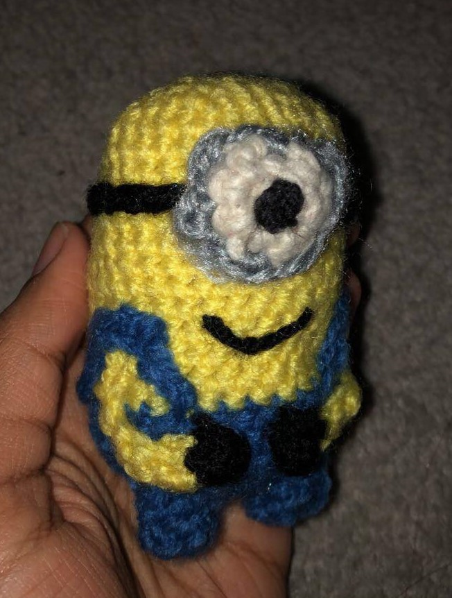
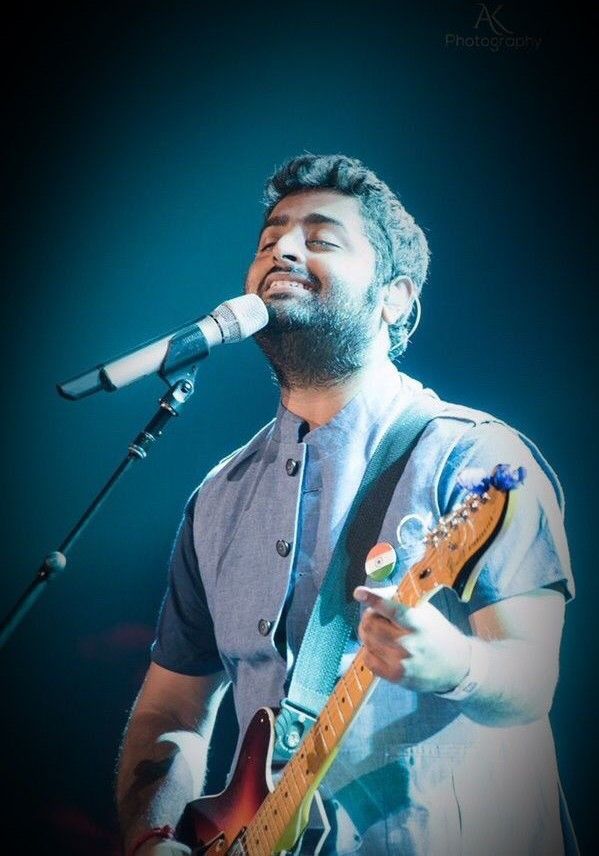

This is a website dedicated to learning a little bit more about me!
I have always been interested in trying anything new that is artistic. Whether that be drawing, painting,
scrapbooking, crocheting, knitting…. You name it! I am not in any means the best at any of these hobbies
that I have picked up, but I love learning new things and watching my creations come to life! I think that
what I like about art is having some foundational rules to guide you, like using certain stitch patterns or
painting with certain colors that work well together, but also having the freedom of making it your own.

A recent crochet project
Music is such an important part of many people’s lives, including mine. In terms of genres, I enjoy many
different types of music. However, I am most into Bollywood and just generally all South Asian music.
Although my 50+ hour playlists do not do it justice, because this kind of music is just so good! Being South Asian myself,
listening to these songs started simply from the desire to be closer to and more appreciative of my culture. It has now
turned into a genuine liking for all South Asian music.

Arijit Singh, Indian playback singer and music composer
My parents are immigrants from the South Asian country Bangladesh. This leads me to having many family members to visit back home whenever I go. The summer of 2023 was my last visit, and it was a very hot yet exciting time. Being from the village in Bangladesh, the culture shock is quite large. They do not eat the same foods or spend their time doing the same activities. A different environment, isolated from what I am used to in the western world, is very liberating. I enjoyed things like street food, seeing the infamous tea plants (shown as the banner of this website), the personal ponds (closest thing to backyard swimming pools in the village), and the endless shopping for cultural clothes. I can go on about the beauties of Bangladesh, but I will stop there. The following images are only some of what I could capture of the life where my parents are from: